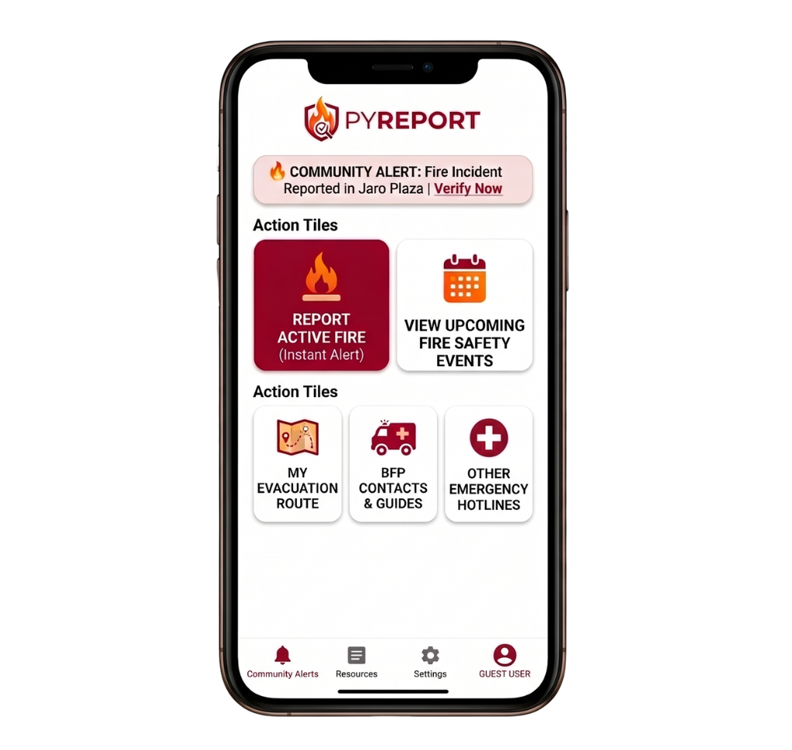

PyReport is a fire detection and immediate reporting application designed specifically to protect, alert, and map emergency responses for the community surrounding the Angelicum School Iloilo.

When a crisis hits, clarity is everything. Our streamlined interface removes the panic from reporting, putting life-saving tools and clear evacuation routes right at your fingertips.
Easily report active fires through the app to broadcast urgent alerts to the surrounding neighborhood and notify the Bureau of Fire Protection (BFP) Region VI headquarters without delay.
Pre-loaded evacuation routes focus on the entire local barangay, guiding students, residents, and families safely away from hazard zones toward designated safe areas.
No time wasted searching for numbers. Instantly dial local fire stations, rescue squads, and essential emergency responders with a single tap.
Bridging digital application solutions with structural community safety exercises throughout March and April 2027.
A structured, high-readiness drill simulation held at the Angelicum School Iloilo Gymnasium. Features application stress tests, actual exit pathway pacing, and professional verification walkthroughs facilitated directly by BFP Region VI personnel.
Hosted at the Eternity City Arena, this interactive format gamifies preventative knowledge. Participants tackle hazard localization flashcards, simulation relays, and exit challenge puzzles built to train family segments dynamically.
By deploying local early alerts, optimizing evacuation pathways, and establishing robust emergency protocols with local authorities, PyReport directly advances SDG 11: Sustainable Cities and Communities, fostering a resilient environment around Jaro, Iloilo City.
Get immediate access to local fire safety notifications, evacuation tracking, and emergency assets.